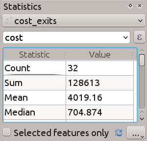
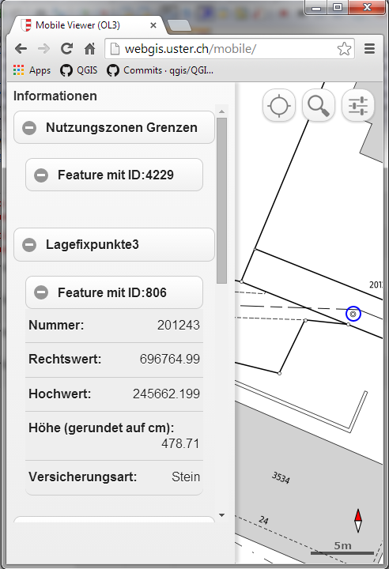

Jurnalul schimbărilor pentru QGIS 2.10¶
Acesta este jurnalul schimbărilor pentru următoarea versiune a QGIS - versiunea 2.10.0 « Pisa» - orașul gazdă al întâlnirii dezvoltatorilor din Martie 2010.
Cea mai nouă Versiune
Aceasta este următoarea lansare din seria noastră de versiuni elaborate o dată la 4 luni. Ea vă oferă acces rapid la noile caracteristici la care am lucrat, reprezentând dezvoltarea «de ultimă oră» a QGIS. Dacă lucrați într-un mediu de producție, unde există o atitudine mai reținută referitoare la introducerea de caracteristici noi pentru utilizatorii dvs., vă oferim, de asemenea, o versiune de QGIS cu suport pe termen lung (LTR). Actuala versiune LTR este 2.8.2 și este disponibilă la download.qgis.org. Versiunile LTR beneficiază, timp de un an, de corectarea erorilor, ele având caracterisiticile permanent înghețate (adică, nu li se vor adăuga noi funcționalități, suportând doar actualizări triviale și corecții pentru problemele semnalate). Noutățile din QGIS 2.10 «Pisa» vor fi incluse în următoarea versiune LTR (programată pentru lansare în 2016), de aceea, versiunea curentă vă oferă o oportunitate excelentă de a testa noile caracteristici, care își vor face simțită prezența în următorul LTR.
Noi Funcționalități în QGIS 2.10 «Pisa»
QGIS 2.10.0 include multe funcțiuni noi, finisaje și îmbunătățiri care fac cel mai popular GIS desktop gratuit, mult mai complet și mai util. Ori de câte ori se adaugă noi caracteristici în aplicație, apare posibilitatea unor noi erori - dacă întâmpinați probleme cu această versiune, vă rugăm să le semnalați la QGIS Bug Tracker.
Mulțumiri
Dorim să le mulțumim dezvoltatorilor, tester-ilor, autorilor documentațiilor și tuturor acelor persoane care, în mod voluntar, au consumat timp și efort (sau au finanțat alte persoane în acest scop).
From the QGIS community we hope you enjoy this release! If you wish to donate time, money or otherwise get involved in making QGIS more awesome, please wander along to qgis.org and lend a hand!
În fine, am dori să mulțumim sponsorilor noștri oficiali pentru sprijinul financiar de neprețuit, pe care l-au oferit acestui proiect:
- Sponsor de AUR: Asia Air Survey, Japonia
- Sponsor de ARGINT: Sourcepole AG, Elveția
- Sponsor de ARGINT: State of Vorarlberg, Austria
- Sponsor de ARGINT: Oficiul Lucrărilor Publice, Irlanda
- Sponsor de BRONZ: Universitatea de Știință și Tehnologie AGH, Polonia
- Sponsor de BRONZ: www.molitec.it, Italia
- Sponsor de BRONZ: www.argusoft.de, Germania
- Sponsor de BRONZ: www.openrunner.com, Franța
- Sponsor de BRONZ: GKG Kassel,(Dr.-Ing. Claas Leiner), Germania
- Sponsor de BRONZ: Customer Analytics
- Sponsor de BRONZ: Urbsol, Australia
- Sponsor de BRONZ: MappingGIS, Spania
- Sponsor de BRONZ: Lutra Consulting, UK
- Sponsor de BRONZ: ADLARES GmbH, Germania
- Sponsor de BRONZ: Avioportolano Italia, Italia
- Sponsor de BRONZ: GeoSynergy, Australia
- Sponsor de BRONZ: Gaia3D, Coreea de Sud
- Sponsor de BRONZ: Royal Borough of Windsor and Maidenhead, UK
- Sponsor de BRONZ: Chartwell Consultants Ltd, Canada
- Sponsor de BRONZ: Trage Wegen vzw, Belgia
- Sponsor de BRONZ: GIS-Support, Polonia
- Sponsor de BRONZ: GIS3W, Italia
- Sponsor de BRONZ: GFI SRL - Societatea pentru Tehnologia Informației, Germania
- Sponsor de BRONZ: Facultatea de Geologie, Geofizică și Protecție a Mediului, AGH, Universitatea de Științe și Tehnologie, Polonia
A current list of donors who have made financial contributions large and small to the project can be seen on our donors list. If you would like to become and official project sponsor, please visit our sponsorship page for details. Sponsoring QGIS helps us to fund our six monthly developer meetings, maintain project infrastructure and fund bug fixing efforts.
QGIS este un soft gratuit iar dvs. nu aveți obligația de a plăti pentru folosirea lui - de fapt, vrem să încurajăm oamenii de oriunde să-l folosească, indiferent de starea financiară sau socială - având convingerea că, punerea la dispoziția utilizatorilor a posibilităților de decizie spațială, va duce la o societate mai bună pentru întreaga omenire.
- Generalități
- Instrumentele de analiză
- Navigatorul
- Furnizorii de date
- Gestiunea datelor
- Diagrame
- Digitizarea
- Etichetarea
- Compozitorul de Hărți
- Programabilitatea
- QGIS Server
- Simbologie
- Caracteristică: Categorii corespunzătoare stilurilor existente
- Caracteristică: Diverse dimensiuni pentru simboluri, folosind renderul gradat
- Caracteristică: O nouă opțiune pentru prevenirea decupării automate a entităților după extinderea hărții
- Caracteristică: Dimensiunea scării și rotația au fost eliminate din meniul avansat
- Caracteristică: Proprietăți definite cu ajutorul datelor, pentru fontul marcajului
- Caracteristică: Vizualizarea și modificarea renderului gradat folosind o histogramă
- Caracteristică: Expresii pentru dimensiune, rotație și lățimea-liniei la nivelul listei de simboluri
- Caracteristică: Efecte în timp real pentru straturi
Generalități¶
Caracteristică: Parametrii de îmbinare pot fi editați¶
De acum, este posibil să editați parametrii îmbinării (cum ar fi prefixul sau coloanele de îmbinare), după crearea îmbinării. Înainte, pentru aceasta trebuia să ștergeți și să recreați întreaga îmbinare.
Caracteristică: Straturile cu îmbinări pot fi filtrate¶
Înainte de Versiunea 2.10 un strat nu putea fi filtrat dacă avea cel puțin o îmbinare. Acum este filtrabil încă, dar numai cu ajutorul coloanelor din tabelul master original.

Caracteristică: Îmbunătățiri generale¶
Conform listei de mai jos, s-au adus următoarele îmbunătățiri:
- Suport pentru straturile Pointcloud în PostGIS
- Bare de instrumente și pictograme îmbunătățite din widget-urile andocabile, pentru a ocupa mai puțin ecran și pentru un aspect mai bun în OSX
- Îmbunătățiri aduse furnizorului / pluginului GRASS
- S-a adăugat suport pentru script-uri cu caractere non-latine, în cazul etichetelor curbate
- Îmbunătățiri foarte mari și robuste aduse calculatorului raster și instrumentelor de georeferențiere
- Improved UI and workflow for the data defined label properties window

Caracteristică: Gestiune îmbunătățită pentru suprascrierea potențială a proiecției proiectului¶
QGIS 2.10 vă va avertiza acum, la încercarea de a salva proiectul dvs., dacă data ultimei modificări dintr-un proiect încărcat s-a schimbat. Acest lucru este util în cazul în care mai mult de un utilizator, sau de o sesiune, au deschis același fișier de proiect, și ambii încearcă să salveze modificările în fișierul de proiect.
Această funcționalitate a fost dezvoltată de: Jürgen Fischer (norBIT)

Caracteristică: Nou motor geometric¶
QGIS 2.10 are un nou motor geometric. În general, nu veți vedea multe diferențe în interfața cu utilizatorul încă, dar acest lucru pune bazele unei serii set de capabilități geospațiale mult mai bogate, pe care vom fi în măsură să le introducem în viitor. Noua implementare suportă tipuri de geometrie curbate (astfel, de exemplu, se poate reprezenta un sens giratoriu din trafic întocmai unui cerc, în locul unui poligon segmentat făcut să arate ca un cerc) și are suport pentru valorile z/m din geometrii. Pentru a utiliza curbele din QGIS va trebui să utilizați PostGIS sau un depozit de date similar, care este capabil să redea geometriile curbilinii. Dacă doriți să faceți un test, puteți încerca un exercițiu simplu ca acesta în baza de date PostGIS:
-- Table: curves DROP TABLE curves;
CREATE TABLE curves (
id bigserial NOT NULL,
geometry geometry(CURVEPOLYGON, 4326),
name text,
CONSTRAINT p_key PRIMARY KEY (id)
);
INSERT INTO curves VALUES ( 1, st_geomfromtext(
'CURVEPOLYGON(CIRCULARSTRING(1 1,1 2, 2 2, 2 1, 1 1))', 4326), 'test');
Apoi adăugați stratul „curbe” în proiectul dvs.
Această funcționalitate a fost dezvoltată de: Marco Hugentobler (Sourcepole AG)
Această funcționalitate a fost finanțată de: KantonSolothurn, Switzerland

Instrumentele de analiză¶
Caracteristică: Un nou widget andocabil, pentru situații statistice¶
Poate afișa statistici sumare (cum ar fi media, abaterea standard, …) pentru un domeniu sau o expresie dintr-un strat vectorial sau dsintr-o selecție. Acest lucru este prevăzut prin intermediul unui nou panou andocabil, pe care îl puteți activa din meniul View -> Panels -> Statistics. Rețineți că veți avea posibilitatea de a genera statistici doar pentru straturile vectoriale care au o coloană numerică.

Caracteristică: Utilizarea funcțiilor logaritmice din calculatorul raster¶
Calculatorul raster (Raster -> Raster Calculator din meniul QGIS) este un instrument care vă permite efectuarea de operațiuni matriciale asupra unuia sau a mai multor straturi raster. În QGIS 2.10 se pot utiliza de acum funcțiile LN și LOG10 în calculatorul raster.

Caracteristică: Noi funcțiuni de zonare statistică¶
Statisticile zonale furnizează o modalitate de a extrage valorile agregate pentru pixelii care stau la baza unui poligon. Următoarele funcțiuni noi au fost adăugate instrumentului nostru de statistici zonale:
- puteți selecta de acum statisticile pe care le doriți calculate
- au fost adăugate extra statistici (mediana, deviația standard, min, max, intervalul, minoritatea, majoritatea și varietatea)
- abilitatea de a selecta banda raster care se va utiliza la extragerea statisticilor
Rețineți că statisticile zonale reprezintă un «plugin de bază» (un plugin care se instalează o dată cu cu aplicația QGIS), dar este dezactivat în mod implicit. Trebuie să-l activați în Managerul de Plugin-uri, după care va apărea o intrare de meniu pentru statisticile zonale în meniul Raster.

Navigatorul¶
Caracteristică: Un nou widget cu proprietăți pentru navigator¶
Atunci când se utilizează panourile de andocare ale Navigatorului QGIS (View -> Panels -> Browser), veți activa un widget cu proprietăți în partea de jos a arborelui sistemului de fișiere. Pentru orice sursă de date pe care veți face clic, se vor afișa proprietățile în acest panou. Acest lucru face rapidă și convenabilă vizualizarea informațiilor de bază despre setul de date selectat. Pentru a comuta vizualizarea proprietăților, ar trebui să utilizați pictograma i din partea de sus a panoului navigatorului.

Caracteristică: O nouă pictogramă pentru navigator¶
Navigatorul QGIS este o aplicație separată, independentă, care vă permite să răsfoiți și să vizualizați seturile de date GIS disponibile pentru dvs. (de la sistemul de fișiere, conexiunile bazei de date, conexiunile la serviciile web, etc.) În edițiile anterioare ale QGIS am folosit o pictogramă foarte similară cu cea a aplicației QGIS, care a fost o sursă de confuzie pentru mulți utilizatori. Pentru a reduce probabilitatea de deschidere a cererii greșite, am creat o nouă pictogramă de Navigator QGIS.

Furnizorii de date¶
Caracteristică: Îmbunătățiri aduse Exportului DXF¶
Exportul DXF a fost îmbunătățit în mod continuu în ultimile trei versiuni de QGIS. Această versiune introduce un SVG îmbunătățit, conversia marcajelor simple în blocuri DXF, și repararea câtorva erori și probleme care au dus la fișiere DXF incomplete (ilizibile). În captura de ecran, puteți vedea imaginea originală din QGIS în stânga, și fișierul DXF exportat în Autodesk TrueView, în dreapta.
Parcurgeți, de asemenea, acest articol de la qgis.ch, pentru a cunoaște ceea ce este posibil sau nu.
Această funcționalitate a fost dezvoltată de: Jürgen Fischer (norBIT)
Această funcționalitate a fost finanțată de: Comunitățile din Morges, Uster, Vevey și SIGE

Caracteristică: Expresii de filtrare pe partea de server PostGIS¶
În QGIS 2.10 puteți filtra acum entitățile pe partea serverului de baze de date. Doar expresiile acceptate vor fi transmise în baza de date. Expresiile care utilizează operatori sau funcții neacceptate vor fi eliminați în urma evaluării locale.
Pentru a face uz de această facilitate trebuie să o activați în Settings -> Options -> data sources. În cazul în care expresia de filtrare este conformă cu PostgreSQL, aceasta va rula automat pe partea de server. Puteți utiliza, de asemenea, această caracteristică atunci când se utilizează API-ul Python, de exemplu, atunci când se utilizează aceste apeluri.
QgsFeatureRequest().setFilterExpression( expression )
sau
QgsVectorLayer::getFeatures( expression )

Gestiunea datelor¶
Caracteristică: Câmpurile virtuale sunt actualizabile¶
Înainte de versiunea 2.8 a trebuit să ștergeți și să recreați câmpurile virtuale dacă ați vrut să schimbați expresia de calcul a câmpului virtual. În 2.10 puteți să mergeți la fila Câmpuri și să apăsați micul buton Expresii pentru a deschide editorul de expresii, și pentru a actualiza expresia folosită pentru câmpul virtual.
Această funcționalitate a fost dezvoltată de: Matthias Kuhn (OpenGIS)
Această funcționalitate a fost finanțată de: City of Uster, Elveția

Caracteristică: Linie de editare cu auto-completare pentru widget-ul ValueRelation¶
Widgetul de editare a relației dintre valorile straturilor vectoriale (Layer -> Properties -> Fields -> Edit Widget -> Value Relation) poate fi acum setat pentru a se autocompleta pe măsură ce tastați în caseta de intrare.

Caracteristică: Îmbunătățiri pentru DB Manager¶
Există două noi funcțiuni în DB Manager :
Interogările încărcate sub formă de strat, nu mai au nevoie de o coloană unică, întreagă
De acum, nu mai este necesară o coloană cu întregi unici, pentru a încărca o interogare SQL ca un strat de QGIS. În loc, va fi folosită o valoare auto-incrementabilă.
Integrarea unui constructor de interogări SQL
În DB Manager o nouă fereastră vă ajută la crearea de interogări SQL, prin intermediul widget-urilor în care numele tabelei, cel al coloanei și funcțiile pot fi selectate de către utilizator. Fereastra a fost portată de la pluginul QSpatialite și lucrează pentru furnizorii PostGIS și Spatialite.
Aceste funcționalități au fost finanțate de: MEDDE (Ministerul francez al Dezvoltării Durabile)
Aceste funcționalități au fost dezvoltate de: Hugo Mercier / Oslandia

Caracteristică: Înlănțuirea filtrelor pentru widgetul de referință a relațiilor¶
Pentru a selecta înregistrări legate din alte tabele se pot folosi widget-urile de referință a relațiilor. Elementele se pot selecta grafic, prin selectarea lor pe hartă, în cazul în care funcția de legătură are o atașată o geometrie, sau să alegeți un element după id-ul de legătură. Pentru a facilita selecția non-spațială, acum este posibilă restrângerea opțiunilor disponibile cu filtre (înlănțuite sau nu). În cazul în care filtrele sunt neînlănțuite alegerile lor sunt combinate cu „AND” pentru a defini opțiunile disponibile. Dacă s-a bifat opțiunea de înlănțuire, sa va activa o fereastră, astfel încât pentru fiecare filtru se arată doar intrările care corespund filtrului anterior. Acest lucru este util pentru selectarea din datele ierarhice, cum ar fi City -> Street -> Number.
Această funcționalitate a fost dezvoltată de: Matthias Kuhn (OpenGIS)
Această funcționalitate a fost finanțată de: SIGE

Diagrame¶
Caracteristică: Îmbunătățiri aduse diagramei¶
Funcționalitatea diagramei din QGIS vă permite să suprapuneți mici diagrame plăcintă sau histograme peste entitățile de pe hartă. În această versiune, am adus următoarele îmbunătățiri diagramelor:
- Diagramele pot fi dezactivate fără pierderea setărilor
- Adaugarea casetei de bifare pentru a se arăta întotdeauna diagramele pentru un strat
- Interfața cu utilizatorul a diagramelor a fost refăcută, pentru a simplifica dialogul și pentru a-l face mai ușor de utilizat
- Clasele diagramei sunt acum afișate în legenda stratului

Digitizarea¶
Caracteristică: Instrument îmbunătățit de rotire a geometriei¶
Instrumentul de rotire a geometriei este un instrument de digitizare avansat, care vă permite să rotiți arbitrar geometria unei entități. Următoarele îmbunătățiri au fost aduse instrumentului de rotire:
- puteți folosi, de acum, intrări numerice în instrumentul de rotire al hărții
- puteți folosi o casetă combinată, pentru a seta unghiurile
- s-a adăugat suport pentru acroșarea la diverse unghiuri (activat direct atunci când
se foloseșteshift + click``) - ancora rotației este definită prin
CTRL+clickși nu prin deplasarea mouse-ului

Etichetarea¶
Caracteristică: „Punct” de aliniere pentru etichetele multilinie¶
Când este setată în acest mod, alinierea textului pentru etichete este dependentă de destinația finală a etichetei în raport cu punctul. De exemplu, dacă eticheta este plasată la stânga punctului atunci eticheta va fi aliniată la dreapta, iar dacă aceasta este situată la dreapta punctului atunci eticheta va fi aliniată la stânga. Acest lucru îmbunătățește foarte mult aspectul etichetei multilinie pentru straturile de tip punct.

Compozitorul de Hărți¶
Caracteristică: Adăugați modul de dimensionare a scării grafice pentru a se potrivi cu lățimea dorită pentru scară¶
În versiunile anterioare de QGIS, scările grafice erau greu de utilizat, în cazul în care gama de scări potențiale era mare. Scara grafică devenea repede fie prea mare fie prea îngustă, și trebuiau adaptate manual dimensiunile segmentului (unități pe segment), după fiecare modificare a scării. De asemenea, din acest motiv scările grafice nu puteau fi utilizate cu adevărat la imprimarea în serie din Atlas sau în QGISserver, atunci când scara hărții finale era necunoscută. Începând din QGIS 2.10 se pot seta dimensiuni min/max pentru o lungime de segment în mm iar QGIS va adapta automat unitățile per segment, în timp ce încă rotunjește valorile.
Nu uitați să setați, de asemenea, alinierea scării, în special dacă doriți ca acesta să fie centrată sau aliniată la dreapta!
Această funcționalitate a fost dezvoltată de: Sandro Mani (Sourcepole AG)
Această funcționalitate a fost finanțată de: Kanton Glarus, Switzerland

Programabilitatea¶
Caracteristică: Îmbunătățiri pentru programatori¶
S-au adus o serie de schimbări și îmbunătățiri care vor fi de interes pentru dezvoltatori:
- Am mărit cerința minimă pentru Qt4 până la versiunea 4.8. Qt4 este una dintre principalele scule / biblioteci C++ pe care le folosim pentru a crea QGIS.
- O nouă clasă
QgsStatisticalSummary, pentru calcularea statisticilor dintr-o listă de numere. - Se permite schimbarea surselor de date din stratul vectorial.
- Partajarea implicită a claselor :
QgsField,QgsFields,QgsDataDefined,QgsFeature,QgsGeometry. - Plugin-urile pot crea acum propriile lor intrări în widget-ul navigatorului cu două noi clase :
QgsDataItemProviderandQgsDataItemProviderRegistry.

QGIS Server¶
Caracteristică: Suport pentru parametrul de toleranță din cererile WMS GetFeatureInfo¶
Atunci când se utilizează straturi WMS servite de QGIS Server, puteți specifica o toleranță care să indice cât de departe de originea clicului trebuie luate în considerare cererile GetFeatureInfo. Acest lucru este important pentru dispozitivele mobile, în cazul în care entitățile sunt mai greu de indicat. Înainte de această nouă caracteristică, era practic imposibil să se identifice entitățile de tip punct sau linie caracteristici pe un dispozitiv mobil, în cazul serverului QGIS. Puteți adăuga următorii parametri la solicitarile GetFeatureInfo ale dumneavoastră:
FI_POINT_TOLERANCE=16&FI_LINE_TOLERANCE=8&FI_POLYGON_TOLERANCE=4
și modificați valorile toleranței (în pixeli) pentru a se potrivi nevoilor dumneavoastră.
Această funcționalitate a fost dezvoltată de: Marco Hugentobler (Sourcepole AG)
Această funcționalitate a fost finanțată de: City of Uster, Elveția

Simbologie¶
Caracteristică: Categorii corespunzătoare stilurilor existente¶
Adăugarea opțiunilor în meniul avansat de randare clasificată, pentru a stabili categoriile pentru simboluri cu un nume adecvat, din biblioteca de stiluri sau dintr-un fișier de stiluri XML.

Caracteristică: Diverse dimensiuni pentru simboluri, folosind renderul gradat¶
Renderele sunt subsisteme ale QGIS care vă permit să creați reprezentări cartografice bogate, pentru datele dvs. Un render gradat prezintă simbologia în funcție de o valoare în continuă schimbare într-un strat vectorial. În versiunile anterioare de QGIS puteați modifica numai culoarea (de exemplu, prin utilizarea unei culori de-a lungul unei game de culori). În QGIS 2.10, randarea gradată a simbolurilor acceptă, de acum, să modificați dimensiunea sau culoarea. Pentru straturile de tip punct se poate modifica dimensiunea punctului, iar pentru linii se poate schimba lățimea liniei. Straturile de tip poligon păstrează doar capacitatea de schimbare în funcție de culoare, nefiind posibilă încă, schimbarea în funcție de dimensiunea liniei.
Această funcționalitate a fost dezvoltată de: Vincent Mora (Oslandia)
Această funcționalitate a fost finanțată de: Agence de l’eau Adour-Garonne

Caracteristică: O nouă opțiune pentru prevenirea decupării automate a entităților după extinderea hărții¶
Această opțiune (situată sub meniul avansat al simbolului) dezactivează tăierea automată a liniilor/poligoanelor, după extinderea canevasului. În unele cazuri, această tăiere duce la o simbolică nefavorabilă (de exemplu, umplerea centroidului are loc acolo unde trebuie să fie întotdeauna centroidul entității).

Caracteristică: Dimensiunea scării și rotația au fost eliminate din meniul avansat¶
S-au eliminat SizeScale și Rotation din `Layer -> Properties -> Symbology tab -> Advanced Menu. Ar trebui mai degrabă să stabiliți rotația pe baza stratului per-simbol folosind o expresie sau un câmp. Expresiile utilizate în proiectele vechi sunt convertite la nivel de proprietăți ale simbolurilor cu mărimi și unghiuri definite prin date.
Această funcționalitate a fost dezvoltată de: Vincent Mora (Oslandia)
Această funcționalitate a fost finanțată de: Agence de l’eau Adour-Garonne

Caracteristică: Proprietăți definite cu ajutorul datelor, pentru fontul marcajului¶
Cele mai multe proprietăți ale marcajului de tip font pot fi de acum definite cu ajutorul datelor, inclusiv dimensiunea, rotația și caracterul marcajului.

Caracteristică: Vizualizarea și modificarea renderului gradat folosind o histogramă¶
O nouă filă pentru histogramă a fost adăugată la renderul gradat, ceea ce arată o histogramă interactivă a valorilor din câmpul sau expresia atribuite. Pauzele între clase pot fi deplasate sau adăugate folosindu-se histograma.
Această funcționalitate a fost finanțată de: ADUGA
Această funcționalitate a fost dezvoltată de: Nyall Dawson

Caracteristică: Expresii pentru dimensiune, rotație și lățimea-liniei la nivelul listei de simboluri¶
Dimensiunea și Rotația pot fi definite printr-o expresie pentru toate nivelurile de simboluri care compun un marcaj. Lățimea poate fi definită printr-o expresie, pentru toate simbolurile care compun o linie.
Pentru simboluri, este generată o legendă pentru diverse dimensiuni. Acest lucru permite o legendă pentru analiză multivariată, în cazul culorilor clasificate/gradate.
Un asistent, cu previzualizare, este accesibil prin intermediul butonului de definire a datelor, pentru a ajuta utilizatorul să definească expresia dimensiunii. Sunt disponibile trei metode: Flannery, Area și Radius.
Această funcționalitate a fost dezvoltată de: Vincent Mora (Oslandia)
Această funcționalitate a fost finanțată de: Agence de l’eau Adour-Garonne

Caracteristică: Efecte în timp real pentru straturi¶
Efectele în timp real pentru straturi adaugă capacităților cartografice, deja extinse, ale QGIS, posibilitatea de a introduce diverse efecte în lanțul de randare. Cu aceste efecte puteți face lucruri cum ar fi plasarea unei umbre sub simbolul dvs., deformarea și forfecarea simbolului randat. Puteți aplica, de asemenea, aceste efecte unor straturi suprapuse și să stabiliți dacă efectul ar trebui să fie progresiv (adică, se aplică la starea randată în mod curent) sau discret (prin re-injectarea geometriei sursă înapoi în lanțul de randare).
Notă: Aceasta este o funcționalitate pentru utilizatorii avansați, și ar trebui să rețineți că folosirea excesivă a acestei caracteristici poate încetini semnificativ timpul de randare, așa că poate doriți să luați în considerare diferite profiluri de simbologie pentru stratul dvs. - unul pentru generarea de hărți de calitate și altul pentru producerea de schițe.
Această funcționalitate a fost dezvoltată de: Nyall Dawson
Această funcționalitate a fost finanțată de: o inițiativă de strângere de fonduri